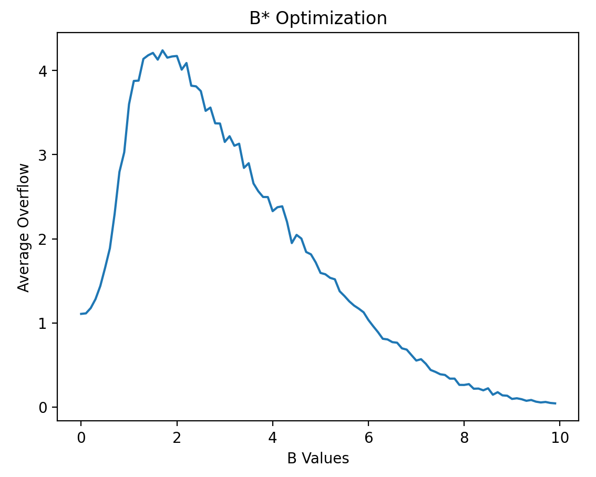
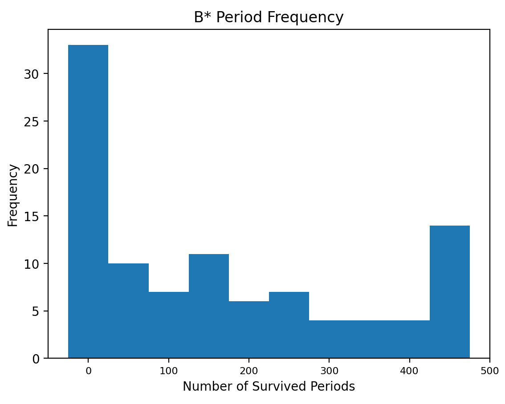
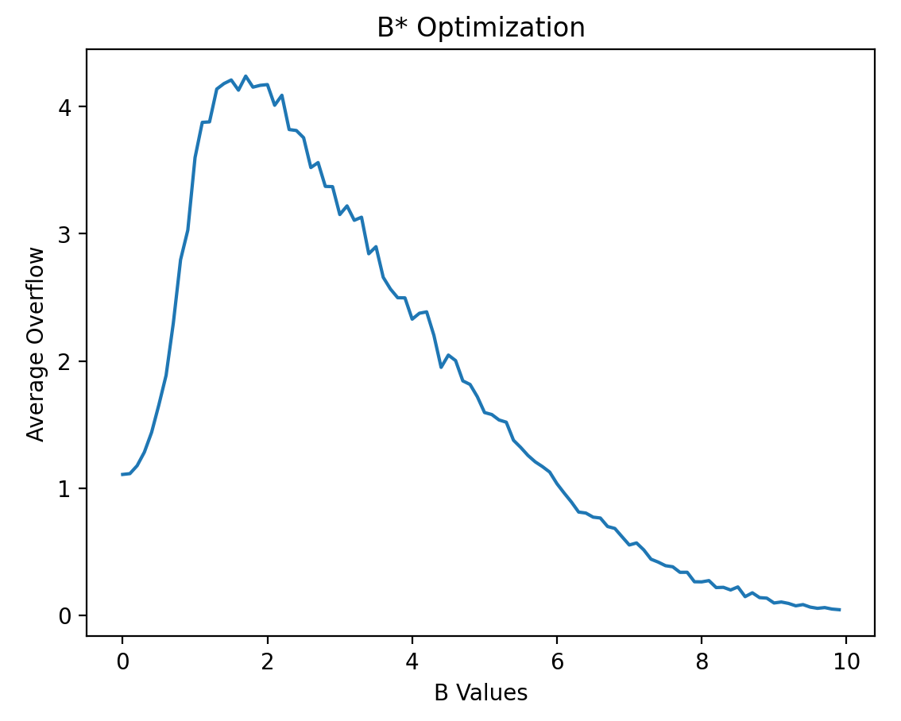
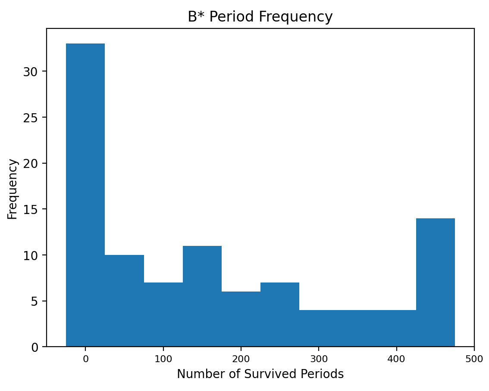

Dynamic Wealth Generating Systems:
Working at the Aresty Research Center alongside Dr. Sopher, we were concerned with developinga way of determining optimal portfolio ceilings in order to maximize wealth generation in a dynamic processes. Utilizing Monte Carlo simulations, we were able to quickly run thousands of runs on several different parameterizations. I then used what we learned to create a survey to tests people's ability to accurately place these ceilings themselves and compare them to the optimized values we arrived at through our Monte Carlo simulations.
 


